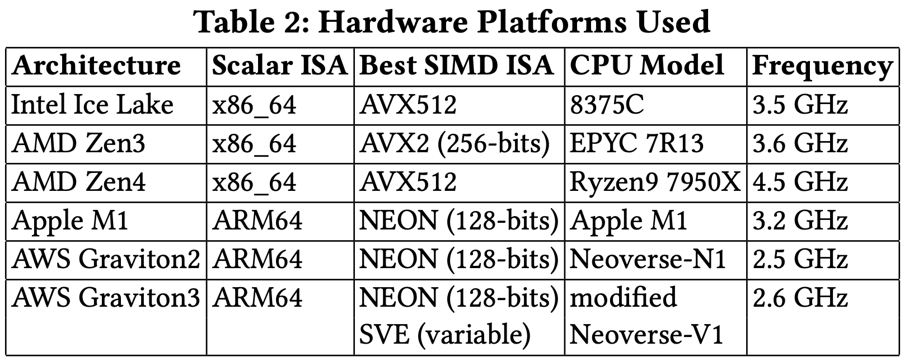
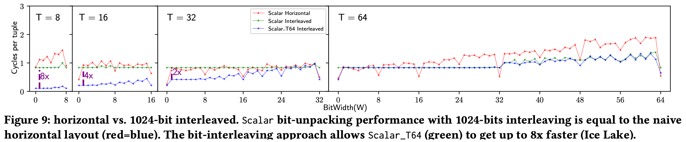
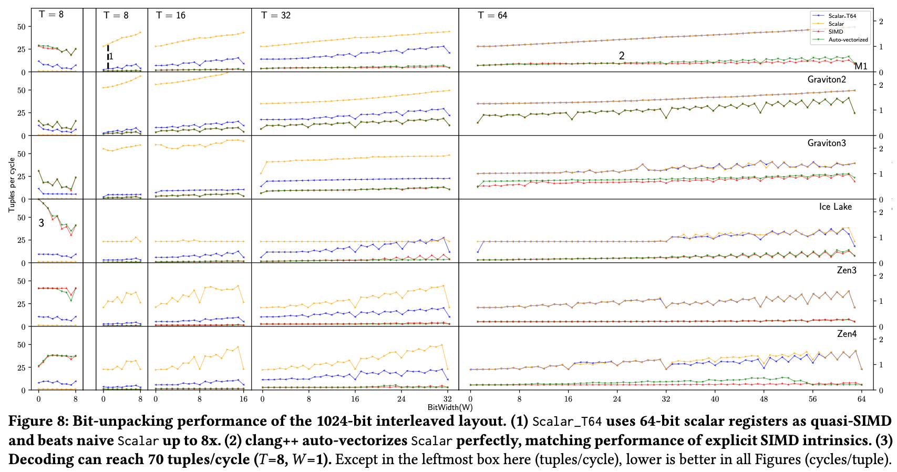
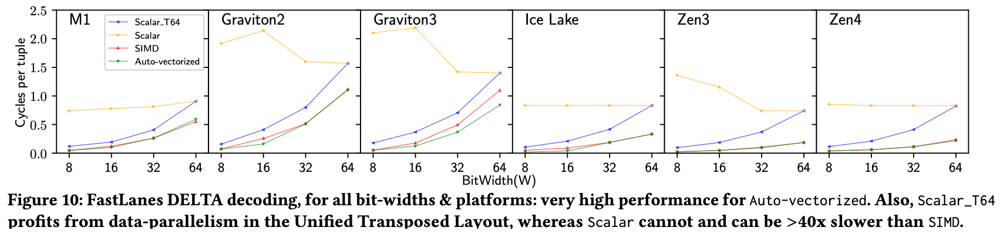
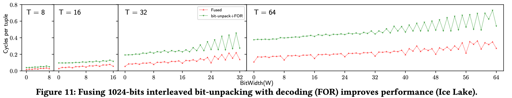
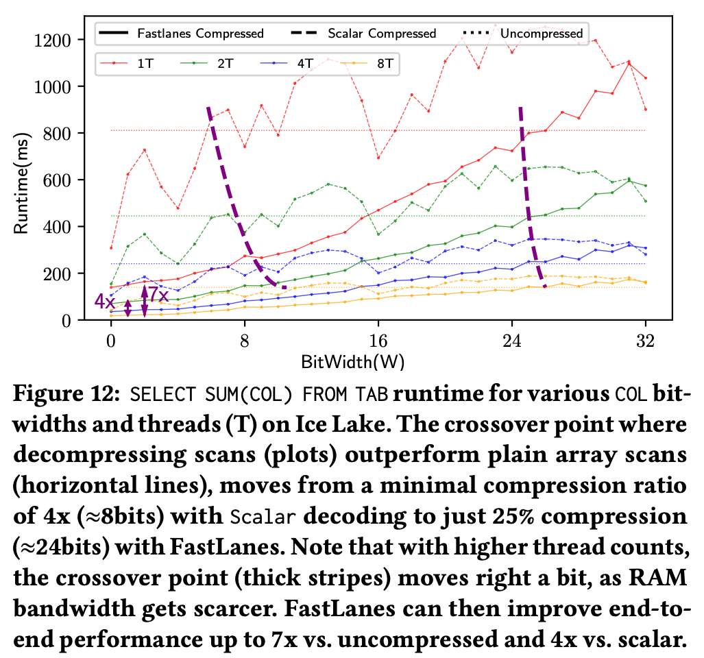

<!DOCTYPE html>
<html><head><title>(논문) The FastLanes Compression Layout: Decoding 100 Billion Integers per Second with Scalar Code, VLDB 2023 (3. Evaluation)</title><meta charSet="utf-8"/><meta name="viewport" content="width=device-width, initial-scale=1.0"/><meta property="og:title" content="(논문) The FastLanes Compression Layout: Decoding 100 Billion Integers per Second with Scalar Code, VLDB 2023 (3. Evaluation)"/><meta property="og:description" content="본 글은 논문 The FastLanes Compression Layout: Decoding &amp;gt; 100 Billion Integers per Second with Scalar Code (VLDB &amp;#039;23) 를 읽고 정리한 글입니다. 별도의 명시가 없는 한, 본 글의 모든 그림은 위 논문에서 가져왔습니다."/><meta property="og:image" content="https://mdg.haeramk.im/static/og-image.png"/><meta property="og:width" content="1200"/><meta property="og:height" content="675"/><link rel="icon" href="../../../../../../static/icon.png"/><meta name="description" content="본 글은 논문 The FastLanes Compression Layout: Decoding &amp;gt; 100 Billion Integers per Second with Scalar Code (VLDB &amp;#039;23) 를 읽고 정리한 글입니다. 별도의 명시가 없는 한, 본 글의 모든 그림은 위 논문에서 가져왔습니다."/><meta name="generator" content="Quartz"/><link rel="preconnect" href="https://fonts.googleapis.com"/><link rel="preconnect" href="https://fonts.gstatic.com"/><link href="../../../../../../index.css" rel="stylesheet" type="text/css" spa-preserve/><link href="https://cdn.jsdelivr.net/npm/katex@0.16.0/dist/katex.min.css" rel="stylesheet" type="text/css" spa-preserve/><link href="https://fonts.googleapis.com/css2?family=IBM Plex Mono&amp;family=Gowun Batang:wght@400;700&amp;family=Gowun Dodum:ital,wght@0,400;0,600;1,400;1,600&amp;display=swap" rel="stylesheet" type="text/css" spa-preserve/><script src="../../../../../../prescript.js" type="application/javascript" spa-preserve></script><script type="application/javascript" spa-preserve>const fetchData = fetch(`../../../../../../static/contentIndex.json`).then(data => data.json())</script></head><body data-slug="gardens/database/encoding/papers/fastlanes.2023.pvldb.vldb.org/full/3.-Evaluation-(FastLanes,-VLDB-23)"><div id="quartz-root" class="page"><div id="quartz-body"><div class="left sidebar"><h1 class="page-title "><a href="../../../../../..">Madison Digital Garden</a></h1><div class="spacer mobile-only"></div><div class="search "><div id="search-icon"><p>Search</p><div></div><svg tabIndex="0" aria-labelledby="title desc" role="img" xmlns="http://www.w3.org/2000/svg" viewBox="0 0 19.9 19.7"><title id="title">Search</title><desc id="desc">Search</desc><g class="search-path" fill="none"><path stroke-linecap="square" d="M18.5 18.3l-5.4-5.4"></path><circle cx="8" cy="8" r="7"></circle></g></svg></div><div id="search-container"><div id="search-space"><input autocomplete="off" id="search-bar" name="search" type="text" aria-label="Search for something" placeholder="Search for something"/><div id="results-container"></div></div></div></div><div class="darkmode "><input class="toggle" id="darkmode-toggle" type="checkbox" tabIndex="-1"/><label id="toggle-label-light" for="darkmode-toggle" tabIndex="-1"><svg xmlns="http://www.w3.org/2000/svg" xmlnsXlink="http://www.w3.org/1999/xlink" version="1.1" id="dayIcon" x="0px" y="0px" viewBox="0 0 35 35" style="enable-background:new 0 0 35 35;" xmlSpace="preserve"><title>Light mode</title><path d="M6,17.5C6,16.672,5.328,16,4.5,16h-3C0.672,16,0,16.672,0,17.5    S0.672,19,1.5,19h3C5.328,19,6,18.328,6,17.5z M7.5,26c-0.414,0-0.789,0.168-1.061,0.439l-2,2C4.168,28.711,4,29.086,4,29.5    C4,30.328,4.671,31,5.5,31c0.414,0,0.789-0.168,1.06-0.44l2-2C8.832,28.289,9,27.914,9,27.5C9,26.672,8.329,26,7.5,26z M17.5,6    C18.329,6,19,5.328,19,4.5v-3C19,0.672,18.329,0,17.5,0S16,0.672,16,1.5v3C16,5.328,16.671,6,17.5,6z M27.5,9    c0.414,0,0.789-0.168,1.06-0.439l2-2C30.832,6.289,31,5.914,31,5.5C31,4.672,30.329,4,29.5,4c-0.414,0-0.789,0.168-1.061,0.44    l-2,2C26.168,6.711,26,7.086,26,7.5C26,8.328,26.671,9,27.5,9z M6.439,8.561C6.711,8.832,7.086,9,7.5,9C8.328,9,9,8.328,9,7.5    c0-0.414-0.168-0.789-0.439-1.061l-2-2C6.289,4.168,5.914,4,5.5,4C4.672,4,4,4.672,4,5.5c0,0.414,0.168,0.789,0.439,1.06    L6.439,8.561z M33.5,16h-3c-0.828,0-1.5,0.672-1.5,1.5s0.672,1.5,1.5,1.5h3c0.828,0,1.5-0.672,1.5-1.5S34.328,16,33.5,16z     M28.561,26.439C28.289,26.168,27.914,26,27.5,26c-0.828,0-1.5,0.672-1.5,1.5c0,0.414,0.168,0.789,0.439,1.06l2,2    C28.711,30.832,29.086,31,29.5,31c0.828,0,1.5-0.672,1.5-1.5c0-0.414-0.168-0.789-0.439-1.061L28.561,26.439z M17.5,29    c-0.829,0-1.5,0.672-1.5,1.5v3c0,0.828,0.671,1.5,1.5,1.5s1.5-0.672,1.5-1.5v-3C19,29.672,18.329,29,17.5,29z M17.5,7    C11.71,7,7,11.71,7,17.5S11.71,28,17.5,28S28,23.29,28,17.5S23.29,7,17.5,7z M17.5,25c-4.136,0-7.5-3.364-7.5-7.5    c0-4.136,3.364-7.5,7.5-7.5c4.136,0,7.5,3.364,7.5,7.5C25,21.636,21.636,25,17.5,25z"></path></svg></label><label id="toggle-label-dark" for="darkmode-toggle" tabIndex="-1"><svg xmlns="http://www.w3.org/2000/svg" xmlnsXlink="http://www.w3.org/1999/xlink" version="1.1" id="nightIcon" x="0px" y="0px" viewBox="0 0 100 100" style="enable-background='new 0 0 100 100'" xmlSpace="preserve"><title>Dark mode</title><path d="M96.76,66.458c-0.853-0.852-2.15-1.064-3.23-0.534c-6.063,2.991-12.858,4.571-19.655,4.571  C62.022,70.495,50.88,65.88,42.5,57.5C29.043,44.043,25.658,23.536,34.076,6.47c0.532-1.08,0.318-2.379-0.534-3.23  c-0.851-0.852-2.15-1.064-3.23-0.534c-4.918,2.427-9.375,5.619-13.246,9.491c-9.447,9.447-14.65,22.008-14.65,35.369  c0,13.36,5.203,25.921,14.65,35.368s22.008,14.65,35.368,14.65c13.361,0,25.921-5.203,35.369-14.65  c3.872-3.871,7.064-8.328,9.491-13.246C97.826,68.608,97.611,67.309,96.76,66.458z"></path></svg></label></div></div><div class="center"><div class="page-header"><div class="popover-hint"><h1 class="article-title ">(논문) The FastLanes Compression Layout: Decoding 100 Billion Integers per Second with Scalar Code, VLDB 2023 (3. Evaluation)</h1><p class="content-meta ">Sep 04, 2024, 17 min read</p><ul class="tags "><li><a href="../../../../../../tags/database" class="internal tag-link">#database</a></li><li><a href="../../../../../../tags/db-encoding" class="internal tag-link">#db-encoding</a></li></ul></div></div><article class="popover-hint"><blockquote class="callout" data-callout="info">
<div class="callout-title">
                  <div class="callout-icon"><svg xmlns="http://www.w3.org/2000/svg" width="100%" height="100%" viewBox="0 0 24 24" fill="none" stroke="currentColor" stroke-width="2" stroke-linecap="round" stroke-linejoin="round"><circle cx="12" cy="12" r="10"></circle><line x1="12" y1="16" x2="12" y2="12"></line><line x1="12" y1="8" x2="12.01" y2="8"></line></svg></div>
                  <div class="callout-title-inner"><p>본 글은 논문 <a href="https://dl.acm.org/doi/10.14778/3598581.3598587" class="external">The FastLanes Compression Layout: Decoding > 100 Billion Integers per Second with Scalar Code (VLDB '23)</a> 를 읽고 정리한 글입니다.</p></div>
                  
                </div>
</blockquote>
<blockquote class="callout" data-callout="info">
<div class="callout-title">
                  <div class="callout-icon"><svg xmlns="http://www.w3.org/2000/svg" width="100%" height="100%" viewBox="0 0 24 24" fill="none" stroke="currentColor" stroke-width="2" stroke-linecap="round" stroke-linejoin="round"><circle cx="12" cy="12" r="10"></circle><line x1="12" y1="16" x2="12" y2="12"></line><line x1="12" y1="8" x2="12.01" y2="8"></line></svg></div>
                  <div class="callout-title-inner"><p>별도의 명시가 없는 한, 본 글의 모든 그림은 위 논문에서 가져왔습니다. </p></div>
                  
                </div>
</blockquote>
<blockquote class="callout is-collapsible is-collapsed" data-callout="info" data-callout-fold>
<div class="callout-title">
                  <div class="callout-icon"><svg xmlns="http://www.w3.org/2000/svg" width="100%" height="100%" viewBox="0 0 24 24" fill="none" stroke="currentColor" stroke-width="2" stroke-linecap="round" stroke-linejoin="round"><circle cx="12" cy="12" r="10"></circle><line x1="12" y1="16" x2="12" y2="12"></line><line x1="12" y1="8" x2="12.01" y2="8"></line></svg></div>
                  <div class="callout-title-inner"><p>목차 </p></div>
                  <svg xmlns="http://www.w3.org/2000/svg" width="24" height="24" viewBox="0 0 24 24" fill="none" stroke="currentColor" stroke-width="2" stroke-linecap="round" stroke-linejoin="round" class="fold">
                  <polyline points="6 9 12 15 18 9"></polyline>
                </svg>
                </div>
<ul>
<li><a href="../../../../../../gardens/database/encoding/papers/fastlanes.2023.pvldb.vldb.org/full/1.-Introduction-(FastLanes,-VLDB-23)" class="internal" data-slug="gardens/database/encoding/papers/fastlanes.2023.pvldb.vldb.org/full/1.-Introduction-(FastLanes,-VLDB-23)">1. Introduction</a></li>
<li><a href="../../../../../../gardens/database/encoding/papers/fastlanes.2023.pvldb.vldb.org/full/2.-FastLanes-(FastLanes,-VLDB-23)" class="internal" data-slug="gardens/database/encoding/papers/fastlanes.2023.pvldb.vldb.org/full/2.-FastLanes-(FastLanes,-VLDB-23)">2. FastLanes</a></li>
<li><a href="../../../../../../gardens/database/encoding/papers/fastlanes.2023.pvldb.vldb.org/full/3.-Evaluation-(FastLanes,-VLDB-23)" class="internal" data-slug="gardens/database/encoding/papers/fastlanes.2023.pvldb.vldb.org/full/3.-Evaluation-(FastLanes,-VLDB-23)">3. Evaluation (현재 글)</a></li>
<li><a href="../../../../../../gardens/database/encoding/papers/fastlanes.2023.pvldb.vldb.org/full/4.-Related-Work-(FastLanes,-VLDB-23)" class="internal" data-slug="gardens/database/encoding/papers/fastlanes.2023.pvldb.vldb.org/full/4.-Related-Work-(FastLanes,-VLDB-23)">4. Related Work</a></li>
<li><a href="../../../../../../gardens/database/encoding/papers/fastlanes.2023.pvldb.vldb.org/full/5.-Conclusion-and-Future-Work-(FastLanes,-VLDB-23)" class="internal" data-slug="gardens/database/encoding/papers/fastlanes.2023.pvldb.vldb.org/full/5.-Conclusion-and-Future-Work-(FastLanes,-VLDB-23)">5. Conclusion and Future Work</a></li>
</ul>
</blockquote>
<h2 id="3-evaluation">3. Evaluation<a aria-hidden="true" tabindex="-1" href="#3-evaluation" class="internal"> §</a></h2>
<h3 id="30-overview">3.0. Overview<a aria-hidden="true" tabindex="-1" href="#30-overview" class="internal"> §</a></h3>
<ul>
<li><em>FastLanes</em> 는 C++ 라이브러리로 제작되어, MIT license 로 오픈소스화 되었다. (<a href="https://github.com/cwida/FastLanes" class="external">링크</a>)</li>
<li>Evaluation 을 통해 저자가 답하려고 하는 질문들은 다음과 같다:
<ol>
<li id="q1"><a href="../../../../../../gardens/database/encoding/papers/fastlanes.2023.pvldb.vldb.org/full/2.-FastLanes-(FastLanes,-VLDB-23)#213-interleaving-bit-packing" class="internal" data-slug="gardens/database/encoding/papers/fastlanes.2023.pvldb.vldb.org/full/2.-FastLanes-(FastLanes,-VLDB-23)">Interleaving BP</a> 에서의 <a href="../../../../../../gardens/database/encoding/papers/fastlanes.2023.pvldb.vldb.org/full/2.-FastLanes-(FastLanes,-VLDB-23)#224-usage-example-unpacking-interleaving-bp" class="internal" data-slug="gardens/database/encoding/papers/fastlanes.2023.pvldb.vldb.org/full/2.-FastLanes-(FastLanes,-VLDB-23)">unpacking</a> 의 실제 속도는 어느정도일까? </li>
<li id="q2">Decoding performance 가 <a href="../../../../../../gardens/arch/ilp/terms/Single-Instruction-Multiple-Data,-SIMD-(Arch)" class="internal" data-slug="gardens/arch/ilp/terms/Single-Instruction-Multiple-Data,-SIMD-(Arch)">SIMD</a> reg bit-width 에 따라 실제로 얼마나 달라질까? 그리고 같은 reg bit-width 에 대해, 다양한 <a href="../../../../../../gardens/arch/ilp/terms/Single-Instruction-Multiple-Data,-SIMD-(Arch)" class="internal" data-slug="gardens/arch/ilp/terms/Single-Instruction-Multiple-Data,-SIMD-(Arch)">SIMD</a> <a href="../../../../../../gardens/arch/drafts/Instruction-Set-Architecture,-ISA-(Arch)" class="internal" data-slug="gardens/arch/drafts/Instruction-Set-Architecture,-ISA-(Arch)">ISA</a> 간의 성능은 얼마나 차이날까? </li>
<li id="q3"><a href="../../../../../../gardens/database/encoding/papers/fastlanes.2023.pvldb.vldb.org/full/2.-FastLanes-(FastLanes,-VLDB-23)#213-interleaving-bit-packing" class="internal" data-slug="gardens/database/encoding/papers/fastlanes.2023.pvldb.vldb.org/full/2.-FastLanes-(FastLanes,-VLDB-23)">Interleaving BP</a> 와 <a href="../../../../../../gardens/database/encoding/papers/fastlanes.2023.pvldb.vldb.org/full/2.-FastLanes-(FastLanes,-VLDB-23)#24-the-unified-transposed-layout" class="internal" data-slug="gardens/database/encoding/papers/fastlanes.2023.pvldb.vldb.org/full/2.-FastLanes-(FastLanes,-VLDB-23)">UTL</a> 의 디자인이 <a href="../../../../../../gardens/arch/ilp/terms/Single-Instruction-Multiple-Data,-SIMD-(Arch)" class="internal" data-slug="gardens/arch/ilp/terms/Single-Instruction-Multiple-Data,-SIMD-(Arch)">SIMD</a> 를 사용하지 않는 scalar code 에서도 성능 향상을 가져다 줄까? </li>
<li id="q4">순수한 scalar code 의 performance 는 어느정도일까? 그리고 compiler 에 의한 auto-vectorization 은 explicit <a href="../../../../../../gardens/arch/ilp/terms/Single-Instruction-Multiple-Data,-SIMD-(Arch)" class="internal" data-slug="gardens/arch/ilp/terms/Single-Instruction-Multiple-Data,-SIMD-(Arch)">SIMD</a> <a href="../../../../../../gardens/arch/common/Intrinsic-Function-(Arch)" class="internal" data-slug="gardens/arch/common/Intrinsic-Function-(Arch)">intrinsic</a> version 과 비교할 때 어느 정도의 성능일까? </li>
<li id="q5"><a href="../../../../../../gardens/database/encoding/papers/fastlanes.2023.pvldb.vldb.org/full/2.-FastLanes-(FastLanes,-VLDB-23)#24-the-unified-transposed-layout" class="internal" data-slug="gardens/database/encoding/papers/fastlanes.2023.pvldb.vldb.org/full/2.-FastLanes-(FastLanes,-VLDB-23)">UTL</a> 의 decoding performance 은 어느정도일까? </li>
<li id="q6"><em>FastLanes</em> 를 도입했을 때의 query execution 은 얼마나 향상될까? 즉, 모든 것이 종합된 E2E 성능 향상은 어느정도일까? </li>
</ol>
</li>
<li>또한 <a href="../../../../../../gardens/database/encoding/papers/fastlanes.2023.pvldb.vldb.org/full/2.-FastLanes-(FastLanes,-VLDB-23)#224-usage-example-unpacking-interleaving-bp" class="internal" data-slug="gardens/database/encoding/papers/fastlanes.2023.pvldb.vldb.org/full/2.-FastLanes-(FastLanes,-VLDB-23)">unpacking</a> 와 decoding kernel 을 fusing <sup><a href="#user-content-fn-fusing-unpacking" id="user-content-fnref-fusing-unpacking" data-footnote-ref aria-describedby="footnote-label" class="internal">1</a></sup> 했을 때의 성능 향상은 어느정도일지도 실험했다고 한다.</li>
<li>선행연구과의 비교도 당연히 수행했는데, 이건 <a href="../../../../../../gardens/database/encoding/papers/fastlanes.2023.pvldb.vldb.org/full/4.-Related-Work-(FastLanes,-VLDB-23)" class="internal" data-slug="gardens/database/encoding/papers/fastlanes.2023.pvldb.vldb.org/full/4.-Related-Work-(FastLanes,-VLDB-23)">section 4</a> 에서 설명한다고 한다.</li>
</ul>
<h3 id="31-micro-benchmarks">3.1. Micro-benchmarks<a aria-hidden="true" tabindex="-1" href="#31-micro-benchmarks" class="internal"> §</a></h3>
<h4 id="310-basic-setup">3.1.0. Basic setup<a aria-hidden="true" tabindex="-1" href="#310-basic-setup" class="internal"> §</a></h4>
<ul>
<li>제안한 <a href="../../../../../../gardens/database/encoding/papers/fastlanes.2023.pvldb.vldb.org/full/2.-FastLanes-(FastLanes,-VLDB-23)#213-interleaving-bit-packing" class="internal" data-slug="gardens/database/encoding/papers/fastlanes.2023.pvldb.vldb.org/full/2.-FastLanes-(FastLanes,-VLDB-23)">Interleaving BP</a> 및 여러 decoding 방법은 모든 lane bit-width 경우의 수 (<span class="math math-inline"><span class="katex"><span class="katex-html" aria-hidden="true"><span class="base"><span class="strut" style="height:0.7224em;vertical-align:-0.0391em;"></span><span class="mord mathnormal" style="margin-right:0.13889em;">T</span><span class="mspace" style="margin-right:0.2778em;"></span><span class="mrel">∈</span><span class="mspace" style="margin-right:0.2778em;"></span></span><span class="base"><span class="strut" style="height:1em;vertical-align:-0.25em;"></span><span class="mopen">{</span><span class="mord">8</span><span class="mpunct">,</span><span class="mspace" style="margin-right:0.1667em;"></span><span class="mord">16</span><span class="mpunct">,</span><span class="mspace" style="margin-right:0.1667em;"></span><span class="mord">32</span><span class="mpunct">,</span><span class="mspace" style="margin-right:0.1667em;"></span><span class="mord">64</span><span class="mclose">}</span></span></span></span></span>) 에 대해 구현이 되었고,</li>
<li>또한 이들을 다음의 4가지 버전에 대해서도 모두 구현했다고 한다. 진짜 미친 노가다네
<ol>
<li><code>Scalar</code>: 순수한 scalar code 이다. 어떠한 vectorization 도 들어가지 않은
<ul>
<li>즉, compiler 에서 vectorization 관련 option 이 꺼져있는 상태다.</li>
</ul>
</li>
<li><code>Scalar_T64</code>: 이건 vectorization 은 하지 않았지만, <code>uint64</code> 자료형을 <span class="math math-inline"><span class="katex"><span class="katex-html" aria-hidden="true"><span class="base"><span class="strut" style="height:0.6833em;"></span><span class="mord mathnormal" style="margin-right:0.05764em;">S</span><span class="mspace" style="margin-right:0.2778em;"></span><span class="mrel">=</span><span class="mspace" style="margin-right:0.2778em;"></span></span><span class="base"><span class="strut" style="height:1em;vertical-align:-0.25em;"></span><span class="mord">64/</span><span class="mord mathnormal" style="margin-right:0.13889em;">T</span></span></span></span></span> 의 <a href="../../../../../../gardens/arch/ilp/terms/Single-Instruction-Multiple-Data,-SIMD-(Arch)" class="internal" data-slug="gardens/arch/ilp/terms/Single-Instruction-Multiple-Data,-SIMD-(Arch)">SIMD</a> 로 가정하는 구현체이다.
<ul>
<li>즉, 그렇게 “가정” 하는 것이고 machine code 관점에서 보아도 vectorization 은 적용되어있지 않은 것.</li>
<li>“가상의” software-implemented <a href="../../../../../../gardens/arch/ilp/terms/Single-Instruction-Multiple-Data,-SIMD-(Arch)" class="internal" data-slug="gardens/arch/ilp/terms/Single-Instruction-Multiple-Data,-SIMD-(Arch)">SIMD</a> 라고 이해하면 될듯; 논문상에서도 <em>quasi-SIMD</em>, 즉 유사-SIMD 라고 표현한다.</li>
</ul>
</li>
<li><code>SIMD</code>: 이건 명시적으로 <a href="../../../../../../gardens/arch/drafts/Instruction-Set-Architecture,-ISA-(Arch)" class="internal" data-slug="gardens/arch/drafts/Instruction-Set-Architecture,-ISA-(Arch)">ISA</a>-specific <a href="../../../../../../gardens/arch/ilp/terms/Single-Instruction-Multiple-Data,-SIMD-(Arch)" class="internal" data-slug="gardens/arch/ilp/terms/Single-Instruction-Multiple-Data,-SIMD-(Arch)">SIMD</a> <a href="../../../../../../gardens/arch/common/Intrinsic-Function-(Arch)" class="internal" data-slug="gardens/arch/common/Intrinsic-Function-(Arch)">intrinsic</a> 을 사용한 버전이다.</li>
<li><code>Auto-vectorized</code>: 이건 암묵적인 <code>SIMD</code> 라고 생각하면 된다. 즉, compiler 에 의해 <a href="../../../../../../gardens/arch/ilp/terms/Single-Instruction-Multiple-Data,-SIMD-(Arch)" class="internal" data-slug="gardens/arch/ilp/terms/Single-Instruction-Multiple-Data,-SIMD-(Arch)">SIMD</a> <a href="../../../../../../gardens/arch/drafts/Instruction-Set-Architecture,-ISA-(Arch)" class="internal" data-slug="gardens/arch/drafts/Instruction-Set-Architecture,-ISA-(Arch)">ISA</a> 로 변환되는 버전이다.
<ul>
<li>이건 <code>Scalar</code> 에서 vectorization compiler option 만 켜서 컴파일 한 것이다.</li>
</ul>
</li>
</ol>
</li>
<li>정리하면 다음과 같다고 할 수 있다.</li>
</ul>


<table><thead><tr><th>NAME</th><th>VECTORIZATION AWARE</th><th>SIMD INSTRUCTION</th><th>SIMD INTRINSIC</th></tr></thead><tbody><tr><td><code>Scalar</code></td><td>X</td><td>X</td><td>X</td></tr><tr><td><code>Scalar_T64</code></td><td>O</td><td>X</td><td>X</td></tr><tr><td><code>SIMD</code></td><td>O</td><td>O</td><td>O</td></tr><tr><td><code>Auto-vectorized</code></td><td>O</td><td>O</td><td>X</td></tr></tbody></table>
<ul>
<li>Compiler 는 LLVM (<code>clang++</code>) 를 사용했고, <code>Scalar</code> (및 <code>Scalar_T64</code>) 에서는 다음의 옵션으로 vectorization 을 비활성화했다고 한다:</li>
</ul>
<div data-rehype-pretty-code-fragment><pre style="background-color:var(--shiki-color-background);" tabindex="0" data-language="bash" data-theme="default"><code data-language="bash" data-theme="default"><span data-line><span style="color:var(--shiki-token-function);">-O3</span><span style="color:var(--shiki-color-text);"> </span><span style="color:var(--shiki-token-string);">-mno-sse</span><span style="color:var(--shiki-color-text);"> </span><span style="color:var(--shiki-token-string);">-fno-slp-vectorize</span><span style="color:var(--shiki-color-text);"> </span><span style="color:var(--shiki-token-string);">-fno-vectorize</span></span></code></pre></div>
<ul>
<li>비교한 CPU 정보는 다음과 같다:</li>
</ul>
<p></p>
<ul>
<li>여기서 ARM64 에 대해 NEON 만을 사용한 것은 AWS Graviton 에서 실험했을 때 SVE 가 NEON 보다 더 느렸기 때문이라고 한다.</li>
<li>이 Micro-benchmark 에서는 순수한 CPU cost 를 확인하고자 했었고 <sup><a href="#user-content-fn-pure-cpu-cost" id="user-content-fnref-pure-cpu-cost" data-footnote-ref aria-describedby="footnote-label" class="internal">2</a></sup>, 하나의 vector 를 3000만번 (30M) decoding 하였다고 한다.
<ul>
<li>그래서 데이터들이 L1 cache 에서만 놀 수 있게 하였다고 한다 <sup><a href="#user-content-fn-l1-cache-resident" id="user-content-fnref-l1-cache-resident" data-footnote-ref aria-describedby="footnote-label" class="internal">3</a></sup>.</li>
</ul>
</li>
<li>Value 하나 당 소모하는 CPU cycle (즉, 낮을수록 좋다) 을 측정했다고 한다.
<ul>
<li>다만, <span class="math math-inline"><span class="katex"><span class="katex-html" aria-hidden="true"><span class="base"><span class="strut" style="height:0.6833em;"></span><span class="mord mathnormal" style="margin-right:0.13889em;">T</span><span class="mspace" style="margin-right:0.2778em;"></span><span class="mrel">=</span><span class="mspace" style="margin-right:0.2778em;"></span></span><span class="base"><span class="strut" style="height:0.6444em;"></span><span class="mord">8</span></span></span></span></span> 에서의 <a href="../../../../../../gardens/database/encoding/papers/fastlanes.2023.pvldb.vldb.org/full/2.-FastLanes-(FastLanes,-VLDB-23)#224-usage-example-unpacking-interleaving-bp" class="internal" data-slug="gardens/database/encoding/papers/fastlanes.2023.pvldb.vldb.org/full/2.-FastLanes-(FastLanes,-VLDB-23)">unpacking</a> 과정만 반대로 CPU cycle 당 value 를 측정했는데,</li>
<li>이건 해당 지표가 CPU platform 간의 차이를 더 명확하게 보여주기 때문이라고 한다.</li>
<li>즉, 소모 시간 (= CPU cycle) 로 platform 간 비교를 하기에는 각 CPU 들의 타겟층 (PC vs server) 와 CPU freq. 등이 차이가 있기 때문이다.</li>
</ul>
</li>
<li>마지막으로, 모든 CPU 는 “Turbo scaling feature” 를 비활성화해 CPU freq. 를 일정하게 유지되게 했다고 한다 <sup><a href="#user-content-fn-cpu-turbo-scaling-feat" id="user-content-fnref-cpu-turbo-scaling-feat" data-footnote-ref aria-describedby="footnote-label" class="internal">4</a></sup>.</li>
</ul>
<h4 id="311-bit-unpacking">3.1.1. Bit-unpacking<a aria-hidden="true" tabindex="-1" href="#311-bit-unpacking" class="internal"> §</a></h4>
<p></p>
<ul>
<li>위 그래프는 <a href="../../../../../../gardens/database/encoding/papers/fastlanes.2023.pvldb.vldb.org/full/2.-FastLanes-(FastLanes,-VLDB-23)#224-usage-example-unpacking-interleaving-bp" class="internal" data-slug="gardens/database/encoding/papers/fastlanes.2023.pvldb.vldb.org/full/2.-FastLanes-(FastLanes,-VLDB-23)">interleaved-bp unpacking</a> 를 사용했을 때와 안했을 때를 비교한 것이다.
<ul>
<li>보면 이것을 사용하는 것 (초록색) 이 사용하지 않는 것 (빨간색) 보다 대체로 유사하거나 빠른 것을 볼 수 있다.</li>
<li>하지만, 사용하는 것에는 parallel 의 기회가 더 많다는 장점이 있다; 보면 <code>Scalar_T64</code> (파란색) 은 <a href="../../../../../../gardens/arch/ilp/terms/Single-Instruction-Multiple-Data,-SIMD-(Arch)" class="internal" data-slug="gardens/arch/ilp/terms/Single-Instruction-Multiple-Data,-SIMD-(Arch)">SIMD</a> ISA 를 사용하지는 않지만, 8bit value 8 개를 64bit 자료형 (<code>uint64</code>) 으로 처리하는 데에서 오는 parallelism 덕분에 비교군 중에 제일 빠른 것을 볼 수 있다.
<ul>
<li>그리고 보라색 글자를 보면, <code>Scalar_T64</code> 와 다른애들과의 차이가 약 <span class="math math-inline"><span class="katex"><span class="katex-html" aria-hidden="true"><span class="base"><span class="strut" style="height:1em;vertical-align:-0.25em;"></span><span class="mord">64/</span><span class="mord mathnormal" style="margin-right:0.13889em;">T</span></span></span></span></span> 정도 나는 것을 알 수 있다.</li>
<li>이건 <a href="#q3" class="internal">Q3</a> 에 대한 답변이 된다; <a href="../../../../../../gardens/database/encoding/papers/fastlanes.2023.pvldb.vldb.org/full/2.-FastLanes-(FastLanes,-VLDB-23)#213-interleaving-bit-packing" class="internal" data-slug="gardens/database/encoding/papers/fastlanes.2023.pvldb.vldb.org/full/2.-FastLanes-(FastLanes,-VLDB-23)">Interleaving BP</a> 를 사용하는 것이 단순 scalar code (<code>Scalar_T64</code>) 에서도 성능 향상을 가져왔기 때문.</li>
</ul>
</li>
</ul>
</li>
</ul>
<p></p>
<ul>
<li>다음은 <a href="../../../../../../gardens/database/encoding/papers/fastlanes.2023.pvldb.vldb.org/full/2.-FastLanes-(FastLanes,-VLDB-23)#224-usage-example-unpacking-interleaving-bp" class="internal" data-slug="gardens/database/encoding/papers/fastlanes.2023.pvldb.vldb.org/full/2.-FastLanes-(FastLanes,-VLDB-23)">interleaved-bp unpacking</a> 의 performance 에 대해 여러 CPU architecture, lane bit-width (<span class="math math-inline"><span class="katex"><span class="katex-html" aria-hidden="true"><span class="base"><span class="strut" style="height:0.6833em;"></span><span class="mord mathnormal" style="margin-right:0.13889em;">T</span></span></span></span></span>), value bit-width (<span class="math math-inline"><span class="katex"><span class="katex-html" aria-hidden="true"><span class="base"><span class="strut" style="height:0.6833em;"></span><span class="mord mathnormal" style="margin-right:0.13889em;">W</span></span></span></span></span>), 에 걸쳐 실험을 한 것이다.
<ul>
<li>일단 이 그래프 자체가 <a href="#q1" class="internal">Q1</a> 에 대한 답변이 된다: 단위가 normalized 되지 않은 순수 cycle per value 이기 때문.
<ul>
<li>수치적으로 보면, Ice Lake 에서 <span class="math math-inline"><span class="katex"><span class="katex-html" aria-hidden="true"><span class="base"><span class="strut" style="height:0.6833em;"></span><span class="mord mathnormal" style="margin-right:0.13889em;">T</span><span class="mspace" style="margin-right:0.2778em;"></span><span class="mrel">=</span><span class="mspace" style="margin-right:0.2778em;"></span></span><span class="base"><span class="strut" style="height:0.6444em;"></span><span class="mord">8</span></span></span></span></span> 일 때 최대값이 거의 70에 달한다는 것을 알 수 있다.</li>
<li>즉, <a href="../../../../../../gardens/database/encoding/papers/fastlanes.2023.pvldb.vldb.org/full/2.-FastLanes-(FastLanes,-VLDB-23)#224-usage-example-unpacking-interleaving-bp" class="internal" data-slug="gardens/database/encoding/papers/fastlanes.2023.pvldb.vldb.org/full/2.-FastLanes-(FastLanes,-VLDB-23)">interleaved-bp unpacking</a> 을 사용하면 1cycle 당 최대 70개의 값을 decoding 할 수 있는 것.</li>
</ul>
</li>
<li>그리고 보면 <a href="../../../../../../gardens/arch/ilp/terms/Single-Instruction-Multiple-Data,-SIMD-(Arch)" class="internal" data-slug="gardens/arch/ilp/terms/Single-Instruction-Multiple-Data,-SIMD-(Arch)">SIMD</a> 를 사용하는 것 (빨간색, 초록색) 이 그렇지 않은 것 (파란색, 노란색) 보다 항상 빠르다는 것을 확인할 수 있다.</li>
<li>또한 <a href="#q2" class="internal">Q2</a> 에서의 CPU architecture 간의 비교를 해보면:
<ul>
<li>일단 AWS Graviton 은 (특히 <span class="math math-inline"><span class="katex"><span class="katex-html" aria-hidden="true"><span class="base"><span class="strut" style="height:0.6833em;"></span><span class="mord mathnormal" style="margin-right:0.13889em;">T</span><span class="mspace" style="margin-right:0.2778em;"></span><span class="mrel">=</span><span class="mspace" style="margin-right:0.2778em;"></span></span><span class="base"><span class="strut" style="height:0.6444em;"></span><span class="mord">64</span></span></span></span></span> 에서) 대체로 구린 성능을 보였다.</li>
<li>하지만 동일한 ARM64 기반인 Apple M1 의 경우에는 AWS Graviton 보다는 더 좋은 성능을 보여줬다.
<ul>
<li>이건 Apple M1 의 경우에 더 나은 <a href="../../../../../../gardens/arch/ilp/Instruction-Level-Parallelism-(Arch)" class="internal" data-slug="gardens/arch/ilp/Instruction-Level-Parallelism-(Arch)">ILP</a> 가 되어 있기 때문으로 보인다고 한다.</li>
</ul>
</li>
</ul>
</li>
<li><a href="#q2" class="internal">Q2</a> 에서 추가적으로 제시한 <a href="../../../../../../gardens/arch/ilp/terms/Single-Instruction-Multiple-Data,-SIMD-(Arch)" class="internal" data-slug="gardens/arch/ilp/terms/Single-Instruction-Multiple-Data,-SIMD-(Arch)">SIMD</a> reg 사이즈와 성능간의 연관성에 대해서는:
<ul>
<li>별로 그런 것처럼 보이지는 않았다.</li>
<li>왜냐면 AMD Zen4 에서는 AVX512 를 사용하며 AMD Zen3 의 AVX2 (256bit) 보다 더 register 의 사이즈가 커졌지만 눈에 띄는 성능 향상은 없었기 때문이다.</li>
<li>다만 이것은 충분히 예상되던 일이었다: AVX512 는 512bit-register 가 아니라 256bit-regitster 2개를 사용하는 것으로 구현되어있기 때문.</li>
</ul>
</li>
<li><a href="#q4" class="internal">Q4</a> 에서의 <code>Auto-vectorization</code> 과 <code>SIMD</code> 의 유사도는 아주 높은 것으로 보인다.
<ul>
<li>보면 거의 모든 실험 결과에서 이 둘이 거의 일치하는 것을 볼 수 있다.</li>
<li>이 상황을 보면 굳이 <a href="../../../../../../gardens/arch/ilp/terms/Single-Instruction-Multiple-Data,-SIMD-(Arch)" class="internal" data-slug="gardens/arch/ilp/terms/Single-Instruction-Multiple-Data,-SIMD-(Arch)">SIMD</a> <a href="../../../../../../gardens/arch/common/Intrinsic-Function-(Arch)" class="internal" data-slug="gardens/arch/common/Intrinsic-Function-(Arch)">intrinsic</a> 을 사용할 필요가 없다는 것을 알 수 있다; 성능이 유사하기에 그냥 compiler 에게 맡기는 것이 code portability 측면에서 더 좋기 때문.</li>
</ul>
</li>
<li>마지막으로 <span class="math math-inline"><span class="katex"><span class="katex-html" aria-hidden="true"><span class="base"><span class="strut" style="height:0.6833em;"></span><span class="mord mathnormal" style="margin-right:0.13889em;">T</span><span class="mspace" style="margin-right:0.2778em;"></span><span class="mrel">=</span><span class="mspace" style="margin-right:0.2778em;"></span></span><span class="base"><span class="strut" style="height:0.6444em;"></span><span class="mord">64</span></span></span></span></span> 에서 <code>Scalar</code> 와 <code>Scalar_T64</code> 가 거의 동일하게 나오는 것에 주목하자.
<ul>
<li>당연히 <span class="math math-inline"><span class="katex"><span class="katex-html" aria-hidden="true"><span class="base"><span class="strut" style="height:0.6833em;"></span><span class="mord mathnormal" style="margin-right:0.13889em;">T</span><span class="mspace" style="margin-right:0.2778em;"></span><span class="mrel">=</span><span class="mspace" style="margin-right:0.2778em;"></span></span><span class="base"><span class="strut" style="height:0.6444em;"></span><span class="mord">64</span></span></span></span></span> 에서는 <code>uint64</code> 자료형이 어떤 parallelism 도 제공하지 않기 때문에, 성능이 동일하게 나오는 것이 정상이다.</li>
</ul>
</li>
</ul>
</li>
<li>이를 통해 <em>FastLanes</em> 가 제공하는 reduced dependency 와 parallelism opportunity 덕분에 CPU 의 역량을 최대로 활용할 수 있음을 알 수 있다 <sup><a href="#user-content-fn-cpu-execution-cap" id="user-content-fnref-cpu-execution-cap" data-footnote-ref aria-describedby="footnote-label" class="internal">5</a></sup>.</li>
</ul>
<h4 id="312-unified-transposed-layout">3.1.2. Unified Transposed Layout<a aria-hidden="true" tabindex="-1" href="#312-unified-transposed-layout" class="internal"> §</a></h4>
<ul>
<li><a href="#q5" class="internal">Q5</a> 와 관련하여 실험한 결과는 다음과 같다:</li>
</ul>
<p></p>
<ul>
<li>일단 여기서도 <code>Scalar_T64</code> 가 그냥 <code>Scalar</code> 보다 훨씬 좋은 것을 알 수 있다.</li>
<li><code>Scalar</code> 버전을 보자면,
<ul>
<li>일단 Apple M1 와 Intel Ice Lake 가 가장 뛰어났고</li>
<li>AWS Graviton 과 AMD Zen3 은 <span class="math math-inline"><span class="katex"><span class="katex-html" aria-hidden="true"><span class="base"><span class="strut" style="height:0.6833em;"></span><span class="mord mathnormal" style="margin-right:0.13889em;">W</span></span></span></span></span> 가 작을때 더 성능이 안좋아지는 기현상이 일어났다.</li>
</ul>
</li>
<li>그리고 <a href="../../../../../../gardens/arch/ilp/terms/Single-Instruction-Multiple-Data,-SIMD-(Arch)" class="internal" data-slug="gardens/arch/ilp/terms/Single-Instruction-Multiple-Data,-SIMD-(Arch)">SIMD</a> 를 사용한 버전 (<code>SIMD</code> 와 <code>Auto-vectorized</code>) 을 보면,
<ul>
<li>AWS Graviton 이 매우 구린 것을 다시 한번 확인할 수 있다.</li>
<li>Best performance 의 관점에서 보면 <span class="math math-inline"><span class="katex"><span class="katex-html" aria-hidden="true"><span class="base"><span class="strut" style="height:0.6833em;"></span><span class="mord mathnormal" style="margin-right:0.13889em;">W</span><span class="mspace" style="margin-right:0.2778em;"></span><span class="mrel">=</span><span class="mspace" style="margin-right:0.2778em;"></span></span><span class="base"><span class="strut" style="height:0.6444em;"></span><span class="mord">8</span></span></span></span></span> 일때 대부분의 platform 에서 성능이 최대로 나타났고 이때의 성능은 cycle 당 40개 이상의 tuple 을 처리할 수 있었다고 한다.</li>
</ul>
</li>
<li>FastLanes 에서 사용하는 instruction 들은 dependency 가 없기 때문에 column 의 데이터가 어떤것이든지 성능에서는 크게 영향이 없었다고 한다. 오직 <span class="math math-inline"><span class="katex"><span class="katex-html" aria-hidden="true"><span class="base"><span class="strut" style="height:0.6833em;"></span><span class="mord mathnormal" style="margin-right:0.13889em;">W</span></span></span></span></span> 만이 유의미했고, 따라서 모든 <span class="math math-inline"><span class="katex"><span class="katex-html" aria-hidden="true"><span class="base"><span class="strut" style="height:0.6833em;"></span><span class="mord mathnormal" style="margin-right:0.13889em;">W</span></span></span></span></span> 에 대해 실험한 것 <sup><a href="#user-content-fn-dependency-free-inst" id="user-content-fnref-dependency-free-inst" data-footnote-ref aria-describedby="footnote-label" class="internal">6</a></sup>.</li>
</ul>
<h4 id="313-fusing-bit-packing-and-decoding">3.1.3. Fusing Bit-packing and Decoding<a aria-hidden="true" tabindex="-1" href="#313-fusing-bit-packing-and-decoding" class="internal"> §</a></h4>
<ul>
<li><em>Fusing</em> 은 연이은 두 작업을 하나의 작업으로 합치는 것이라고 생각하면 된다.</li>
<li>따라서 여기서 <em>Fusing BP and Decoding</em> 이라는 것은 BP-unpacking 이후 바로 decoding 을 하는 것을 의미한다.
<ul>
<li>즉, BP-unpacking 이후 register 에 남아있는 데이터를 그대로 decoding 에 넣는 것이다.</li>
<li>이렇게 하면 BP-unpacking 의 마지막 instruction 인 <code>STORE</code> 와 decoding 의 첫 instruction 인 <code>LOAD</code> 가 절약되는 것.</li>
</ul>
</li>
</ul>
<p></p>
<ul>
<li>위 결과는 이러한 <em>Fusing</em> 을 사용했을 때의 실험으로 확실히 성능이 좋아지는 것을 볼 수 있다.
<ul>
<li>낮을수록 좋은거고, 따라서 <em>Fusing</em> (빨간색) 의 경우 <em>non-Fusing</em> (초록색) 보다 더 우수하다.</li>
</ul>
</li>
<li>BP-unpack 하여 <a href="../../../../../../gardens/database/encoding/terms/Dictionary-Encoding-(Encoding)" class="internal" data-slug="gardens/database/encoding/terms/Dictionary-Encoding-(Encoding)">DICT</a> 혹은 <a href="../../../../../../gardens/database/encoding/terms/Frame-Of-Reference,-FOR-(Encoding)" class="internal" data-slug="gardens/database/encoding/terms/Frame-Of-Reference,-FOR-(Encoding)">FOR</a> 로 compressed 된 vector 로 바꾸는 경우에는 fusing 이 필요 없다고 한다. <sup><a href="#user-content-fn-fusing-dict-for" id="user-content-fnref-fusing-dict-for" data-footnote-ref aria-describedby="footnote-label" class="internal">7</a></sup></li>
<li><a href="../../../../../../gardens/database/encoding/terms/Frame-Of-Reference,-FOR-(Encoding)" class="internal" data-slug="gardens/database/encoding/terms/Frame-Of-Reference,-FOR-(Encoding)">FOR</a> 이후 <a href="../../../../../../gardens/database/encoding/terms/Delta-Coding-(Encoding)" class="internal" data-slug="gardens/database/encoding/terms/Delta-Coding-(Encoding)">DELTA</a> 를 적용시킨 경우 (즉, decompress 시에는 <a href="../../../../../../gardens/database/encoding/terms/Delta-Coding-(Encoding)" class="internal" data-slug="gardens/database/encoding/terms/Delta-Coding-(Encoding)">DELTA</a> 처리 후 <a href="../../../../../../gardens/database/encoding/terms/Frame-Of-Reference,-FOR-(Encoding)" class="internal" data-slug="gardens/database/encoding/terms/Frame-Of-Reference,-FOR-(Encoding)">FOR</a> 처리) 에는 fusing 을 사용할 수 있다. <sup><a href="#user-content-fn-fusing-delta-for" id="user-content-fnref-fusing-delta-for" data-footnote-ref aria-describedby="footnote-label" class="internal">8</a></sup></li>
</ul>
<h3 id="32-end-to-end-query-performance">3.2. End-to-End Query Performance<a aria-hidden="true" tabindex="-1" href="#32-end-to-end-query-performance" class="internal"> §</a></h3>
<ul>
<li><a href="#q6" class="internal">Q6</a> 와 관련해서, <a href="https://dl.acm.org/doi/10.14778/3275366.3284966" class="external">여기</a> 에 제시된 query processor 에 FastLanes 를 통합해 실질적인 query processing performance 를 측정했다고 한다.
<ul>
<li>참고로 platform 은 Ice Lake 이며, 모든 데이터는 memory 에 올라와 있다고 한다.</li>
</ul>
</li>
<li>일단 schema 는:
<ul>
<li>Table 한개: <code>TAB</code></li>
<li>Column 한개: <code>COL</code></li>
<li>Data type: <code>uint32</code></li>
<li>Data count: <span class="math math-inline"><span class="katex"><span class="katex-html" aria-hidden="true"><span class="base"><span class="strut" style="height:0.7278em;vertical-align:-0.0833em;"></span><span class="mord">10</span><span class="mspace" style="margin-right:0.2222em;"></span><span class="mbin">×</span><span class="mspace" style="margin-right:0.2222em;"></span></span><span class="base"><span class="strut" style="height:0.8141em;"></span><span class="mord"><span class="mord">2</span><span class="msupsub"><span class="vlist-t"><span class="vlist-r"><span class="vlist" style="height:0.8141em;"><span style="top:-3.063em;margin-right:0.05em;"><span class="pstrut" style="height:2.7em;"></span><span class="sizing reset-size6 size3 mtight"><span class="mord mtight"><span class="mord mtight">28</span></span></span></span></span></span></span></span></span></span></span></span></span> (총 10GiB)</li>
</ul>
</li>
<li>이때의 결과는 다음과 같다:</li>
</ul>
<p></p>
<ul>
<li>일단 가로축은 Bit-width (<span class="math math-inline"><span class="katex"><span class="katex-html" aria-hidden="true"><span class="base"><span class="strut" style="height:0.6833em;"></span><span class="mord mathnormal" style="margin-right:0.13889em;">W</span></span></span></span></span>) 이다.
<ul>
<li>따라서 특정 <span class="math math-inline"><span class="katex"><span class="katex-html" aria-hidden="true"><span class="base"><span class="strut" style="height:0.6833em;"></span><span class="mord mathnormal" style="margin-right:0.13889em;">W</span></span></span></span></span> 에 대해, 모든 데이터들은 <span class="math math-inline"><span class="katex"><span class="katex-html" aria-hidden="true"><span class="base"><span class="strut" style="height:1.0913em;vertical-align:-0.25em;"></span><span class="mopen">[</span><span class="mord">0</span><span class="mpunct">,</span><span class="mspace" style="margin-right:0.1667em;"></span><span class="mord"><span class="mord">2</span><span class="msupsub"><span class="vlist-t"><span class="vlist-r"><span class="vlist" style="height:0.8413em;"><span style="top:-3.063em;margin-right:0.05em;"><span class="pstrut" style="height:2.7em;"></span><span class="sizing reset-size6 size3 mtight"><span class="mord mtight"><span class="mord mathnormal mtight" style="margin-right:0.13889em;">W</span></span></span></span></span></span></span></span></span><span class="mspace" style="margin-right:0.2222em;"></span><span class="mbin">−</span><span class="mspace" style="margin-right:0.2222em;"></span></span><span class="base"><span class="strut" style="height:1em;vertical-align:-0.25em;"></span><span class="mord">1</span><span class="mclose">]</span></span></span></span></span> 범위 안에 있고, <span class="math math-inline"><span class="katex"><span class="katex-html" aria-hidden="true"><span class="base"><span class="strut" style="height:0.6833em;"></span><span class="mord mathnormal" style="margin-right:0.13889em;">W</span></span></span></span></span> 사이즈로 <a href="../../../../../../gardens/database/encoding/terms/Bit-Packing,-BP-(Encoding)" class="internal" data-slug="gardens/database/encoding/terms/Bit-Packing,-BP-(Encoding)">BP</a> 되었다는 것을 의미한다.</li>
<li>이 데이터들은 해당 범위 안에서 일정한 확률 (uniform) 로 랜덤하게 생성된 것들이다.</li>
</ul>
</li>
<li>그리고 세로축은 query execution duration 이다.
<ul>
<li>Query 는 간단하게 <code>SELECT SUM(COL) FROM TAB;</code> 즉 그냥 모든 데이터를 다 더하는 것이다.</li>
</ul>
</li>
<li>각 선들에 대해서는,
<ul>
<li>선의 종류는 compression method 이다.
<ul>
<li>즉, 실선은 <em>FastLanes</em> 가 적용된 것, 긴 점선은 <code>Scalar</code> 버전, 그냥 점선은 compression 하지 않은 것이다.</li>
<li>그래서 보면 compression 하지 않은 것 (그냥 점선) 의 경우에는 모든 <span class="math math-inline"><span class="katex"><span class="katex-html" aria-hidden="true"><span class="base"><span class="strut" style="height:0.6833em;"></span><span class="mord mathnormal" style="margin-right:0.13889em;">W</span></span></span></span></span> 에 대해 동일한 결과가 나오는 것을 알 수 있다.</li>
</ul>
</li>
<li>선의 색깔은 thread 의 개수이다.
<ul>
<li>즉, 빨간색은 thread 1개를 사용한 것 (1T), 초록색은 thread 2개를 사용한 것 (2T), 등등인 것.</li>
</ul>
</li>
</ul>
</li>
<li>그럼 결과를 보자.
<ul>
<li>우선 같은 색깔의 선들을 비교해 보면 compression method 들 간의 차이를 확인할 수 있다.
<ul>
<li>보면 대략 <span class="math math-inline"><span class="katex"><span class="katex-html" aria-hidden="true"><span class="base"><span class="strut" style="height:0.6833em;"></span><span class="mord mathnormal" style="margin-right:0.13889em;">W</span><span class="mspace" style="margin-right:0.2778em;"></span><span class="mrel">=</span><span class="mspace" style="margin-right:0.2778em;"></span></span><span class="base"><span class="strut" style="height:0.6444em;"></span><span class="mord">26</span></span></span></span></span> 전까지는 <em>FastLanes</em> 를 사용한 것이 (vectorized execution 덕분에) 제일 빠르다.</li>
<li>제일 극적인 변화는 그림에 보라색 글자로 적혀있는 <span class="math math-inline"><span class="katex"><span class="katex-html" aria-hidden="true"><span class="base"><span class="strut" style="height:0.7278em;vertical-align:-0.0833em;"></span><span class="mord">4</span><span class="mord">×</span></span></span></span></span>, <span class="math math-inline"><span class="katex"><span class="katex-html" aria-hidden="true"><span class="base"><span class="strut" style="height:0.7278em;vertical-align:-0.0833em;"></span><span class="mord">7</span><span class="mord">×</span></span></span></span></span> 이다. 8T (노란색 선) 기준,
<ul>
<li><span class="math math-inline"><span class="katex"><span class="katex-html" aria-hidden="true"><span class="base"><span class="strut" style="height:0.6833em;"></span><span class="mord mathnormal" style="margin-right:0.13889em;">W</span><span class="mspace" style="margin-right:0.2778em;"></span><span class="mrel">=</span><span class="mspace" style="margin-right:0.2778em;"></span></span><span class="base"><span class="strut" style="height:0.6444em;"></span><span class="mord">2</span></span></span></span></span> 언저리에서 <em>FastLanes</em> (실선) 은 uncompressed (점선) 에 비해 <span class="math math-inline"><span class="katex"><span class="katex-html" aria-hidden="true"><span class="base"><span class="strut" style="height:0.7278em;vertical-align:-0.0833em;"></span><span class="mord">7</span><span class="mord">×</span></span></span></span></span> 정도의 향상이 있었고,</li>
<li><span class="math math-inline"><span class="katex"><span class="katex-html" aria-hidden="true"><span class="base"><span class="strut" style="height:0.6833em;"></span><span class="mord mathnormal" style="margin-right:0.13889em;">W</span><span class="mspace" style="margin-right:0.2778em;"></span><span class="mrel">=</span><span class="mspace" style="margin-right:0.2778em;"></span></span><span class="base"><span class="strut" style="height:0.6444em;"></span><span class="mord">1</span></span></span></span></span> 언저리에서 <em>FastLanes</em> (실선) 은 <code>Scalar</code> (긴 점선) 에 비해 <span class="math math-inline"><span class="katex"><span class="katex-html" aria-hidden="true"><span class="base"><span class="strut" style="height:0.7278em;vertical-align:-0.0833em;"></span><span class="mord">4</span><span class="mord">×</span></span></span></span></span> 정도의 향상이 있었다는 것을 의미한다.</li>
</ul>
</li>
</ul>
</li>
<li>그리고 세로로 그어져 있는 저 보라색 긴점선은 uncompressed 보다 느려지는 시점을 의미한다.
<ul>
<li>Compression 의 경우에는 memory-CPU BW 를 적게 먹는다는 장점이 있지만 decompression overhead 가 있다는 단점이 있다.</li>
<li>따라서 저 보라색 긴점선이 이러한 trade-off 를 나타내고 있는 것.</li>
<li>왼쪽의 그것은 모든 thread 개수에 대해, <code>Scalar</code> (긴점선 그래프) 가 uncompressed (점선 그래프) 보다 느려지는 (교차하는) 지점을 나타낸 것이고,</li>
<li>오른쪽의 그것은 모든 thread 개수에 대해, <em>FastLanes</em> (실선 그래프) 가 uncompressed (점선 그래프) 보다 느려지는 (교차하는) 지점을 나타낸 것이다.</li>
<li>즉, <em>FastLanes</em> 가 <code>Scalar</code> 에 비해 더 많은 <span class="math math-inline"><span class="katex"><span class="katex-html" aria-hidden="true"><span class="base"><span class="strut" style="height:0.6833em;"></span><span class="mord mathnormal" style="margin-right:0.13889em;">W</span></span></span></span></span> 에 대해 성능 이점을 가져올 수 있다고 해석할 수 있다.</li>
</ul>
</li>
</ul>
</li>
</ul>
<section data-footnotes class="footnotes"><h2 class="sr-only" id="footnote-label">Footnotes<a aria-hidden="true" tabindex="-1" href="#footnote-label" class="internal"> §</a></h2>
<ol>
<li id="user-content-fn-fusing-unpacking">
<p>이것도 뭔소린지는 아직까지는 모르겠다. <a href="#user-content-fnref-fusing-unpacking" data-footnote-backref class="data-footnote-backref internal" aria-label="Back to content">↩</a></p>
</li>
<li id="user-content-fn-pure-cpu-cost">
<p>뭔소리임 <a href="#user-content-fnref-pure-cpu-cost" data-footnote-backref class="data-footnote-backref internal" aria-label="Back to content">↩</a></p>
</li>
<li id="user-content-fn-l1-cache-resident">
<p>3000만번 실험을 돌린거랑 L1 cache resident 가 뭔상관인지 모르겠다. <a href="#user-content-fnref-l1-cache-resident" data-footnote-backref class="data-footnote-backref internal" aria-label="Back to content">↩</a></p>
</li>
<li id="user-content-fn-cpu-turbo-scaling-feat">
<p>내용을 이해하기에 critical 한 것은 아니지만, 이게 뭔지, 그리고 원문에의 “CPU clock normalization stable” 이 뭔소린지 잘 모르겠다. <a href="#user-content-fnref-cpu-turbo-scaling-feat" data-footnote-backref class="data-footnote-backref internal" aria-label="Back to content">↩</a></p>
</li>
<li id="user-content-fn-cpu-execution-cap">
<p>이 문장이 잘 이해도 안되고 갑자기 왜 튀어나온지도 모르겠다.
원본 문장: “The absence of dependencies and the opportunities for data-parallelism that FastLanes code exposes, make it profit from total CPU execution capability, which is the product of ILP and register width.” <a href="#user-content-fnref-cpu-execution-cap" data-footnote-backref class="data-footnote-backref internal" aria-label="Back to content">↩</a></p>
</li>
<li id="user-content-fn-dependency-free-inst">
<p>Dependency-free instruction 이 ISA-free 를 말하려는 것 같은데, 이거랑 data type 에 따른 성능이랑 어떤 연관이 있는건지 모르겠다. <a href="#user-content-fnref-dependency-free-inst" data-footnote-backref class="data-footnote-backref internal" aria-label="Back to content">↩</a></p>
</li>
<li id="user-content-fn-fusing-dict-for">
<p>이건 또 뭔소리임; 위 문단에서는 fusing 하면 더 좋다고 하고 FOR 와 fusing 한 것을 실험하여 Figure 11 에서 보여주기도 했는데?
원몬 문장: “In case of decoding into compressed vectors, fusing is not needed for DICT and FOR (decoding is just bit-unpacking in that case ś therefore we do not micro-benchmark these schemes separately).” <a href="#user-content-fnref-fusing-dict-for" data-footnote-backref class="data-footnote-backref internal" aria-label="Back to content">↩</a></p>
</li>
<li id="user-content-fn-fusing-delta-for">
<p>뭐 할 수 있을 것 같기는 한데 BP-unpack 이랑 fusing 하는 것을 설명하는 본 section 에서 왜 이런얘기를 하는지는 모르겠다. <a href="#user-content-fnref-fusing-delta-for" data-footnote-backref class="data-footnote-backref internal" aria-label="Back to content">↩</a></p>
</li>
</ol>
</section></article></div><div class="right sidebar"><div class="graph "><h3>Graph View</h3><div class="graph-outer"><div id="graph-container" data-cfg="{&quot;drag&quot;:true,&quot;zoom&quot;:true,&quot;depth&quot;:1,&quot;scale&quot;:1.1,&quot;repelForce&quot;:0.5,&quot;centerForce&quot;:0.3,&quot;linkDistance&quot;:30,&quot;fontSize&quot;:0.6,&quot;opacityScale&quot;:1,&quot;showTags&quot;:true,&quot;removeTags&quot;:[]}"></div><svg version="1.1" id="global-graph-icon" xmlns="http://www.w3.org/2000/svg" xmlnsXlink="http://www.w3.org/1999/xlink" x="0px" y="0px" viewBox="0 0 55 55" fill="currentColor" xmlSpace="preserve"><path d="M49,0c-3.309,0-6,2.691-6,6c0,1.035,0.263,2.009,0.726,2.86l-9.829,9.829C32.542,17.634,30.846,17,29,17
	s-3.542,0.634-4.898,1.688l-7.669-7.669C16.785,10.424,17,9.74,17,9c0-2.206-1.794-4-4-4S9,6.794,9,9s1.794,4,4,4
	c0.74,0,1.424-0.215,2.019-0.567l7.669,7.669C21.634,21.458,21,23.154,21,25s0.634,3.542,1.688,4.897L10.024,42.562
	C8.958,41.595,7.549,41,6,41c-3.309,0-6,2.691-6,6s2.691,6,6,6s6-2.691,6-6c0-1.035-0.263-2.009-0.726-2.86l12.829-12.829
	c1.106,0.86,2.44,1.436,3.898,1.619v10.16c-2.833,0.478-5,2.942-5,5.91c0,3.309,2.691,6,6,6s6-2.691,6-6c0-2.967-2.167-5.431-5-5.91
	v-10.16c1.458-0.183,2.792-0.759,3.898-1.619l7.669,7.669C41.215,39.576,41,40.26,41,41c0,2.206,1.794,4,4,4s4-1.794,4-4
	s-1.794-4-4-4c-0.74,0-1.424,0.215-2.019,0.567l-7.669-7.669C36.366,28.542,37,26.846,37,25s-0.634-3.542-1.688-4.897l9.665-9.665
	C46.042,11.405,47.451,12,49,12c3.309,0,6-2.691,6-6S52.309,0,49,0z M11,9c0-1.103,0.897-2,2-2s2,0.897,2,2s-0.897,2-2,2
	S11,10.103,11,9z M6,51c-2.206,0-4-1.794-4-4s1.794-4,4-4s4,1.794,4,4S8.206,51,6,51z M33,49c0,2.206-1.794,4-4,4s-4-1.794-4-4
	s1.794-4,4-4S33,46.794,33,49z M29,31c-3.309,0-6-2.691-6-6s2.691-6,6-6s6,2.691,6,6S32.309,31,29,31z M47,41c0,1.103-0.897,2-2,2
	s-2-0.897-2-2s0.897-2,2-2S47,39.897,47,41z M49,10c-2.206,0-4-1.794-4-4s1.794-4,4-4s4,1.794,4,4S51.206,10,49,10z"></path></svg></div><div id="global-graph-outer"><div id="global-graph-container" data-cfg="{&quot;drag&quot;:true,&quot;zoom&quot;:true,&quot;depth&quot;:-1,&quot;scale&quot;:0.9,&quot;repelForce&quot;:0.5,&quot;centerForce&quot;:0.3,&quot;linkDistance&quot;:30,&quot;fontSize&quot;:0.6,&quot;opacityScale&quot;:1,&quot;showTags&quot;:true,&quot;removeTags&quot;:[]}"></div></div></div><div class="toc desktop-only"><button type="button" id="toc"><h3>Table of Contents</h3><svg xmlns="http://www.w3.org/2000/svg" width="24" height="24" viewBox="0 0 24 24" fill="none" stroke="currentColor" stroke-width="2" stroke-linecap="round" stroke-linejoin="round" class="fold"><polyline points="6 9 12 15 18 9"></polyline></svg></button><div id="toc-content"><ul class="overflow"><li class="depth-0"><a href="#3-evaluation" data-for="3-evaluation">3. Evaluation</a></li><li class="depth-1"><a href="#30-overview" data-for="30-overview">3.0. Overview</a></li><li class="depth-1"><a href="#31-micro-benchmarks" data-for="31-micro-benchmarks">3.1. Micro-benchmarks</a></li><li class="depth-1"><a href="#32-end-to-end-query-performance" data-for="32-end-to-end-query-performance">3.2. End-to-End Query Performance</a></li></ul></div></div><div class="backlinks "><h3>Backlinks</h3><ul class="overflow"><li><a href="../../../../../../gardens/database/encoding/papers/fastlanes.2023.pvldb.vldb.org/(논문)-The-FastLanes-Compression-Layout---Decoding-100-Billion-Integers-per-Second-with-Scalar-Code" class="internal">(논문) The FastLanes Compression Layout - Decoding 100 Billion Integers per Second with Scalar Code</a></li><li><a href="../../../../../../gardens/database/encoding/papers/fastlanes.2023.pvldb.vldb.org/full/1.-Introduction-(FastLanes,-VLDB-23)" class="internal">(논문) The FastLanes Compression Layout: Decoding 100 Billion Integers per Second with Scalar Code, VLDB 2023 (1. Introduction)</a></li><li><a href="../../../../../../gardens/database/encoding/papers/fastlanes.2023.pvldb.vldb.org/full/2.-FastLanes-(FastLanes,-VLDB-23)" class="internal">(논문) The FastLanes Compression Layout: Decoding 100 Billion Integers per Second with Scalar Code, VLDB 2023 (2. FastLanes)</a></li><li><a href="../../../../../../gardens/database/encoding/papers/fastlanes.2023.pvldb.vldb.org/full/3.-Evaluation-(FastLanes,-VLDB-23)" class="internal">(논문) The FastLanes Compression Layout: Decoding 100 Billion Integers per Second with Scalar Code, VLDB 2023 (3. Evaluation)</a></li><li><a href="../../../../../../gardens/database/encoding/papers/fastlanes.2023.pvldb.vldb.org/full/4.-Related-Work-(FastLanes,-VLDB-23)" class="internal">(논문) The FastLanes Compression Layout: Decoding 100 Billion Integers per Second with Scalar Code, VLDB 2023 (4. Related Work)</a></li><li><a href="../../../../../../gardens/database/encoding/papers/fastlanes.2023.pvldb.vldb.org/full/5.-Conclusion-and-Future-Work-(FastLanes,-VLDB-23)" class="internal">(논문) The FastLanes Compression Layout: Decoding 100 Billion Integers per Second with Scalar Code, VLDB 2023 (5. Conclusion and Future Work)</a></li></ul></div></div></div><footer class><hr/><p>Created with <a href="https://quartz.jzhao.xyz/">Quartz v4.1.0</a>, © 2025</p><ul><li><a href="https://github.com/haeramkeem">GitHub</a></li><li><a href="https://www.linkedin.com/in/haeram-kim-277404220">LinkedIn</a></li><li><a href="mailto:haeram.kim1@gmail.com">Email</a></li></ul></footer></div></body><script type="application/javascript">// quartz/components/scripts/quartz/components/scripts/callout.inline.ts
function toggleCallout() {
  const outerBlock = this.parentElement;
  outerBlock.classList.toggle(`is-collapsed`);
  const collapsed = outerBlock.classList.contains(`is-collapsed`);
  const height = collapsed ? this.scrollHeight : outerBlock.scrollHeight;
  outerBlock.style.maxHeight = height + `px`;
  let current = outerBlock;
  let parent = outerBlock.parentElement;
  while (parent) {
    if (!parent.classList.contains(`callout`)) {
      return;
    }
    const collapsed2 = parent.classList.contains(`is-collapsed`);
    const height2 = collapsed2 ? parent.scrollHeight : parent.scrollHeight + current.scrollHeight;
    parent.style.maxHeight = height2 + `px`;
    current = parent;
    parent = parent.parentElement;
  }
}
function setupCallout() {
  const collapsible = document.getElementsByClassName(
    `callout is-collapsible`
  );
  for (const div of collapsible) {
    const title = div.firstElementChild;
    if (title) {
      title.removeEventListener(`click`, toggleCallout);
      title.addEventListener(`click`, toggleCallout);
      const collapsed = div.classList.contains(`is-collapsed`);
      const height = collapsed ? title.scrollHeight : div.scrollHeight;
      div.style.maxHeight = height + `px`;
    }
  }
}
document.addEventListener(`nav`, setupCallout);
window.addEventListener(`resize`, setupCallout);
</script><script type="module">
          import mermaid from 'https://cdn.jsdelivr.net/npm/mermaid/dist/mermaid.esm.min.mjs';
          const darkMode = document.documentElement.getAttribute('saved-theme') === 'dark'
          mermaid.initialize({
            startOnLoad: false,
            securityLevel: 'loose',
            theme: darkMode ? 'dark' : 'default'
          });
          document.addEventListener('nav', async () => {
            await mermaid.run({
              querySelector: '.mermaid'
            })
          });
          </script><script src="https://cdn.jsdelivr.net/npm/katex@0.16.7/dist/contrib/copy-tex.min.js" type="application/javascript"></script><script src="https://www.googletagmanager.com/gtag/js?id=G-N68CCP1QHG" type="application/javascript"></script><script src="../../../../../../postscript.js" type="module"></script></html>